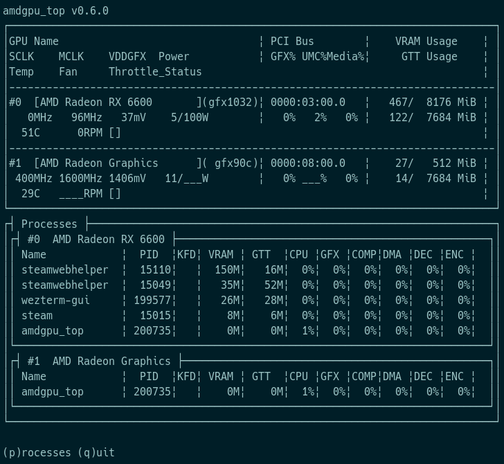
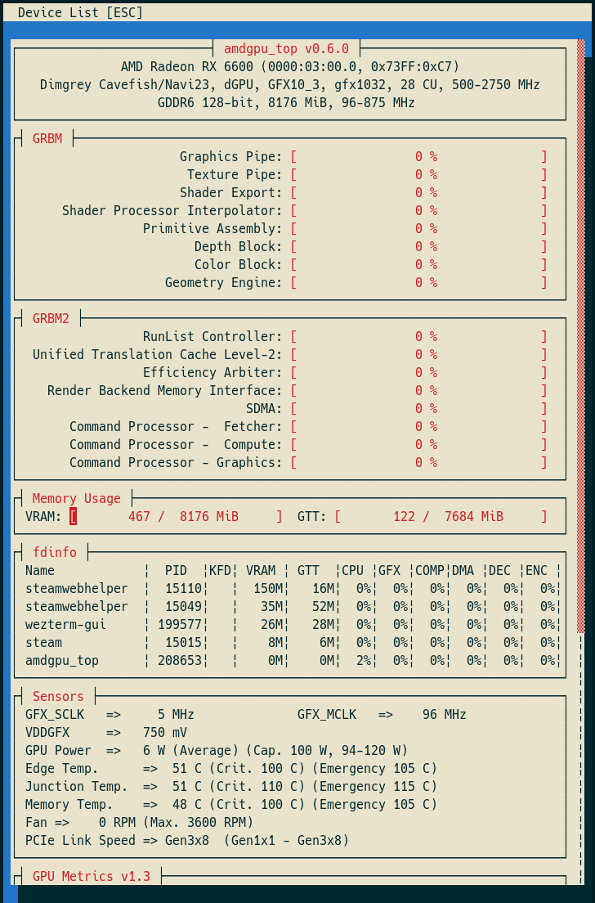
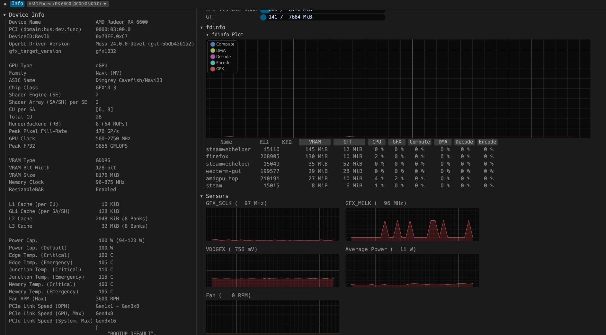

{kind=link}
amdgpu_top is tool that display AMD GPU utilization, like umr or clbr/radeontop or intel_gpu_top.
The tool displays information gathered from performance counters (GRBM, GRBM2), sensors, fdinfo, and AMDGPU driver.
| Simple TUI (like nvidia-smi, rocm-smi) |
TUI | GUI |
|---|---|---|
 |
 |
 |
{kind=link}
{kind=link}
{kind=link}
Simple TUI, TUI, GUI
SimpleTUI.
Simple TUI (like nvidia-smi, rocm-smi).

TUI.
TUI (# Run SMI mode: amdgpu_top --smi)

GUI.
GUI (# Run GUI mode amdgpu_top --gui)

Quick Links¶
- Usage
- Options
- Commands for TUI
- Example of using JSON mode
- fdinfo description
- Installation
- Packages
- Build from source
- Binary Size
- References
- Translations
- Alternatives
Quick Links Con't. (Metadata)¶
- Read about the AMDGPU_TOP Changelog
- Read about the LICENSE
- Review the Man Pages
- See the XDNA
Dependent Dynamic Libraries¶
Dependent Dynamic Libraries
- libdrm
- libdrm_amdgpu
Usage¶
Usage
# Run TUI mode
amdgpu_top
# Run GUI mode
amdgpu_top --gui
# Run SMI mode
amdgpu_top --smi
# Dump AMDGPU info
amdgpu_top -d
# Dump AMDGPU info and gpu_metrics
amdgpu_top -d -gm
Options¶
Options
FLAGS:
-d, --dump
Dump AMDGPU info. (Specifications, VRAM, PCI, ResizableBAR, VBIOS, Video caps)
This option can be combined with the "-J" option.
--list
Display a list of AMDGPU devices.
-J, --json
Output JSON formatted data. This option can be combined with the "-d" option.
--gui
Launch GUI mode.
--smi
Launch Simple TUI mode. (like nvidia-smi, rocm-smi)
-p, --process
Dump All GPU processes and memory usage per process.
--apu, --select-apu
Select APU instance.
--single, --single-gpu
Display only the selected APU/GPU
--no-pc
The application does not read the performance counter (GRBM, GRBM2 if this flag is set.
Reading the performance counter may deactivate the power saving feature of APU/GPU.
-gm, --gpu_metrics, --gpu-metrics
Dump gpu_metrics for all AMD GPUs. https://www.kernel.org/doc/html/latest/gpu/amdgpu/thermal.html#gpu-metrics
--pp_table, --pp-table
Dump pp_table from sysfs and VBIOS for all AMD GPUs. (only support Navi1x and Navi2x, Navi3x)
--drm_info, --drm-info
Dump DRM info. Inspired by https://gitlab.freedesktop.org/emersion/drm_info.
--xdna
Dump XDNA NPU info.
--dark, --dark-mode
Set to the dark mode. (TUI/GUI)
--light, --light-mode
Set to the light mode. (TUI/GUI)
--gl, --opengl
Use OpenGL API to the GUI backend.
--vk, --vulkan
Use Vulkan API to the GUI backend, and use APU/iGPU for GUI rendering if it is available.
-V, --version
Print version information.
-h, --help
Print help information.
OPTIONS:
-i <usize>
Select GPU instance.
--pci <String>
Specifying PCI path. (domain:bus:dev.func)
-s <u64>, -s <u64>ms
Refresh period (interval) in milliseconds for JSON mode. (default: 1000ms) -n <u32>
Specifies the maximum number of iteration for JSON mode. If 0 is specified, it will be an infinite loop. (default: 0)
-u <u64>, --update-process-index <u64>
Update interval in seconds of the process index for fdinfo. (default: 5s --json_fifo, --json-fifo <String>
Output JSON formatted data to FIFO (named pipe) for other application and scripts.
--decode-gm <Path>, --decode-gpu-metrics <Path>
Decode the specified gpu_metrics file.
Commands for TUI¶
| key | |
|---|---|
| g | toggle GRBM |
| r | toggle GRBM2 |
| v | toggle VRAM/GTT Usage |
| f | toggle fdinfo |
| n | toggle Sensors |
| m | toggle GPU Metrics |
| h | change update interval (high = 100ms, low = 1000ms) |
| q | Quit |
| P | sort fdinfo by pid |
| M | sort fdinfo by VRAM usage |
| G | sort fdinfo by GFX usage |
| M | sort fdinfo by MediaEngine usage |
| R | reverse sort |
Example: Using JSON Mode¶
Example: Using JSON Mode
Output¶
Output
AMD Radeon RX 6600 (0000:03:00.0): GFX: 13%, MediaEngine: 0%, Memory: 4%
AMD Radeon Graphics (0000:08:00.0): GFX: 0%, MediaEngine: 0%, Memory: null%
AMD Radeon RX 6600 (0000:03:00.0): GFX: 15%, MediaEngine: 0%, Memory: 5%
AMD Radeon Graphics (0000:08:00.0): GFX: 0%, MediaEngine: 0%, Memory: null%
AMD Radeon RX 6600 (0000:03:00.0): GFX: 3%, MediaEngine: 0%, Memory: 2%
AMD Radeon Graphics (0000:08:00.0): GFX: 0%, MediaEngine: 0%, Memory: null%
...
fdinfo Description¶
fdinfo Description
- fdinfo for the AMDGPU driver shows hardware IP usage per process.
VRAM¶
vram
- GPU Memory.
GTT¶
GTT
- Graphics Translation Tables.
KFD¶
KFD
- The process of using the AMDKFD driver.
GFX¶
GFX
- GFX engine.
Compute/COMP¶
Compute/COMP
- Compute engine.
- The AMDKFD driver dose not track queues and does not show them in fdinfo.
DMA¶
DMA
- DMA/SDMA (System DMA) engine.
Decode/DEC¶
Decode/DEC
- Media decoder.
- This is not show on VCN4 or later.
Encode/ENC¶
Encode/ENC
- Media encoder.
- This is not show on VCN4 or later.
VCN, Media¶
VCN, Media
- Media engine.
- From VCN4, the encoding queue and decoding queue have been unified.
- The AMDGPU driver handles both decoding and encoding as contexts for the encoding engine.
- This is the average of the video decoder/encoder and the JPEG decoder usage.
JPEG¶
JPEG
- JPEG decoder.
VPE¶
VPE
- Video Processor Engine. ref: Video Processor Engine (VPE)
VCN_Unified, VCNU¶
VCN_Unified, VCNU
- The video decoder/encoder usage for VCN4.
Installation¶
Build From Source¶
Without GUI¶
Installation Packages
- Releases
- .deb (generated by cargo-deb)
- .rpm (generated by cargo-generate-rpm)
- .AppImage (generated by xbuild)
- Arch Linux
- To install run:
sudo pacman -S amdgpu_top - Alternatively, install from the AUR
- To install run:
- OpenMandriva
- To install run:
sudo dnf install amdgpu_top
- To install run:
- Nix
- Install a package: nix-env -iA amdgpu_top.
- Solus
- To install run:
sudo eopkg it amdgpu_top
- To install run:
Build From Source
Without GUI
$ cargo install --locked --path . --no-default-features --features="tui"
Distribution Specific Instructions¶
Debian/Ubuntu¶
Fedora¶
Binary Size¶
| Features | Size (stripped) |
|---|---|
| json | ~1.1M |
| tui | ~1.5M |
| json, tui | ~1.7M |
| json, tui, gui | ~18M |
References¶
References
- Tom St Denis / umr · GitLab
- Mesa3D
- AMD Documentation
- https://github.com/AMDResearch/omniperf/tree/v1.0.4/src/perfmon_pub
- https://github.com/freedesktop/mesa-r600_demo
- radeonhd:r6xxErrata
- Linux Kernel AMDGPU Driver
- libdrm_amdgpu API
/drivers/gpu/drm/amd/amdgpu/amdgpu_kms.c
amdgpu_allowed_register_entry/drivers/gpu/drm/amd/amdgpu/{cik,nv,vi,si,soc15,soc21}.c
- libdrm_amdgpu API
Translations¶
Translations
-
amdgpu_topis using cargo-i18n with Project Fluent for translation. -
Please refer to pop-os/popsicle for additional supported languages.
Supported Languages¶
Supported languages
Alternatives¶
Alternatives
If amdgpu_top is not enough for you or you don't like it, try the following applications.
AMD_DEBUG=info <opengl application>orRADV_DEBUG=info <vulkan application>- Print AMDGPU-related information
- https://docs.mesa3d.org/envvars.html#envvar-AMD_DEBUG
- https://docs.mesa3d.org/envvars.html#envvar-RADV_DEBUG
- clbr/radeontop
- View your GPU utilization, both for the total activity percent and individual blocks.
- Syllo/nvtop
- GPUs process monitoring for AMD, Intel and NVIDIA
- Tom St Denis / umr · GitLab
- User Mode Register Debugger for AMDGPU Hardware
- GPUOpen-Tools/radeon_gpu_profiler
- for developer
- Radeon GPU Profiler (RGP) is a tool from AMD that allows for deep inspection of GPU workloads.
- ROCm/amdsmi
Project Metadata¶
Project Metadata
- Read about the AMDGPU_TOP Changelog
- Read about the LICENSE
- Review the Man Pages
- See the XDNA
Important!
[IMPORTANT]
A separate cache might be created for each architecture that Mesa is installed for on your system.
For example under the default settings you may end up with a 1GB cache for x86_64 and another 1GB cache fori386.
Important!
-
amdgpu_top is using cargo-i18n with Project Fluent for translation.
-
Please refer to pop-os/popsicle for additional supported languages.
JSON mode.
$ amdgpu_top --json | jq -c -r '(.devices[] |
(.Info | .DeviceName + " (" + .PCI + "): ") +
([.gpu_activity | to_entries[] | .key + ": " + (.value.value|tostring) + .value.unit] | join(", ")))'